Labrador retrieverwiki-fr
Labrador retrieverwiki-fr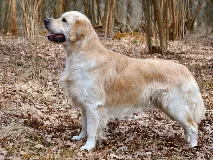
Golden retrieverwiki-fr Berger allemandwiki-fr
Berger allemandwiki-fr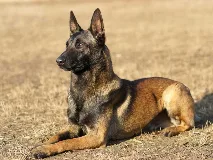
Berger belge Malinoiswiki-fr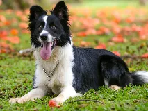
Border colliewiki-fr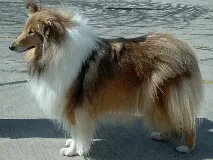
Colleywiki-fr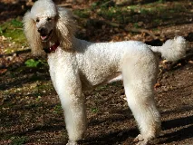
Canichewiki-fr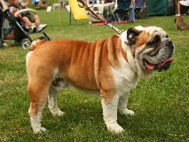
Bulldog anglaiswiki-fr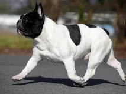
Bouledogue françaiswiki-fr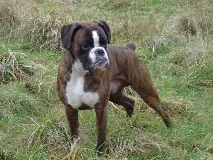
Boxerwiki-fr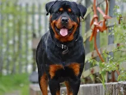
Rottweilerwiki-fr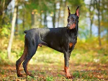
Dobermanwiki-fr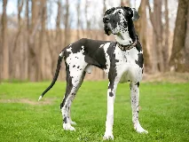
Dogue allemandwiki-fr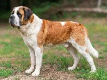
Saint-bernardwiki-fr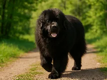
Terre-neuvewiki-fr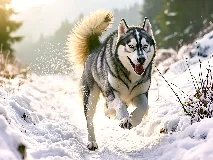
Husky sibérienwiki-fr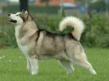
Malamute d'Alaskawiki-fr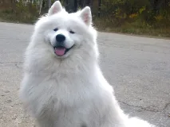
Samoyèdewiki-fr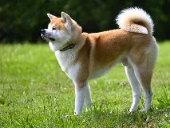
Akita Inuwiki-fr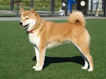
Shiba Inuwiki-fr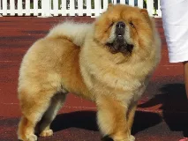
Chow-chowwiki-fr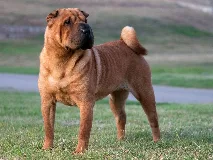
Shar Peibing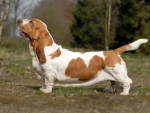
Basset houndwiki-fr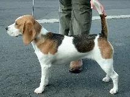
Beaglewiki-fr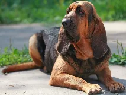
Chien de Saint-Hubertbing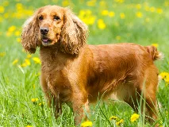
Cocker spanielwiki-fr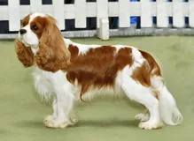
Cavalier King Charlesbing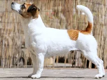
Jack Russell terrierwiki-fr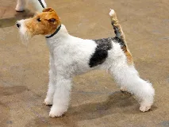
Fox-terrierwiki-fr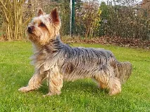
Yorkshire terrierwiki-fr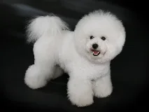
Bichon friséwiki-fr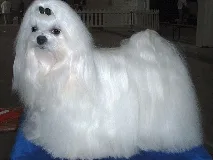
Bichon maltaiswiki-fr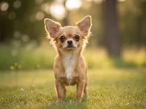
Chihuahuawiki-fr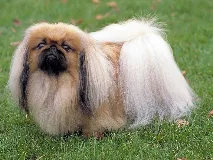
Pékinoiswiki-fr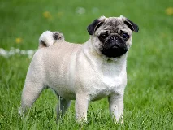
Carlinwiki-fr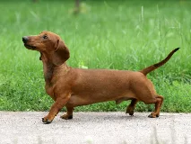
Teckelwiki-fr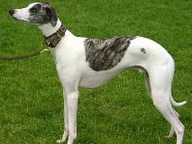
Whippetwiki-fr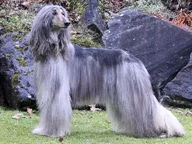
Lévrier afghanwiki-fr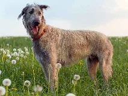
Lévrier irlandaiswiki-fr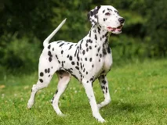
Dalmatienwiki-fr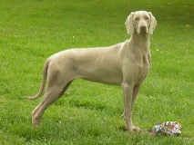
Weimaranerwiki-fr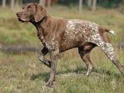
Braque allemandwiki-fr Épagneul bretonwiki-fr
Épagneul bretonwiki-fr Épagneul françaiswiki-fr
Épagneul françaiswiki-fr Setter anglaiswiki-fr
Setter anglaiswiki-fr Setter irlandaiswiki-fr
Setter irlandaiswiki-fr Pointer anglaiswiki-fr
Pointer anglaiswiki-fr Berger australienwiki-fr
Berger australienwiki-fr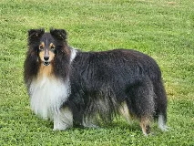
Berger des Shetlandwiki-fr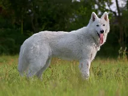
Berger blanc suissewiki-fr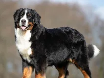
Bouvier bernoiswiki-fr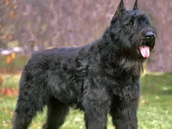
Bouvier des Flandreswiki-fr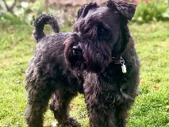
Schnauzerwiki-fr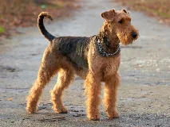
Airedale Terrierbing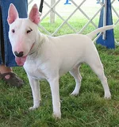
Bull Terrierbing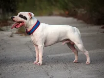
Staffordshire Bull Terrierwiki-fr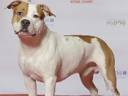
American Staffordshire Terrierwiki-fr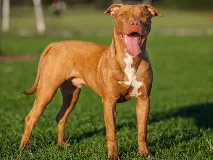
American Pit Bull Terrierwiki-fr
Cane Corsowiki-fr
Dogue de Bordeauxwiki-fr
Mastiffwiki-fr
Fila Brasileirobing
Chien de montagne des Pyrénéeswiki-fr
Leonbergwiki-fr
Spitz japonaisbing
Spitz allemandwiki-fr
Épagneul nain continental (Papillon)wiki-fr
Lhassa Apsowiki-fr
Shih tzuwiki-fr
Boston Terrierwiki-fr
Griffon bruxelloisbing
King Charles Spanielwiki-fr
Basenjiwiki-fr
Xoloitzcuintlewiki-fr
Chien nu peruvienbing
Rhodesian Ridgebackwiki-fr
Boerboelwiki-fr
Kangalwiki-fr
Berger d'Anatoliewiki-fr
Berger de Beaucewiki-fr
Berger picardwiki-fr
Barbetbing
Scottish Terrierwiki-fr
Cairn terrierwiki-fr
West Highland white terrierwiki-fr
Sealyham Terrierwiki-fr
Norfolk Terrierbing
Norwich Terrierwiki-fr
Skye terrierwiki-fr
Border Terrierwiki-fr
Bedlington terrierwiki-fr
Kerry Blue Terrierwiki-fr
Irish Terrierwiki-fr
Welsh terrierbing
Manchester terrierwiki-fr
Havanaiswiki-fr
Coton de Tuléarwiki-fr
Berger hollandaiswiki-fr
Briardimposée
Berger polonais de Valléewiki-fr
Puliwiki-fr
Komondorwiki-fr
Chien-loup tchécoslovaquewiki-fr
Chien-loup de Saarlooswiki-fr
Basset fauve de Bretagnewiki-fr
Basset bleu de Gascognewiki-fr
Grand bleu de Gascognewiki-fr
Beagle-harrierwiki-fr
Otterhoundwiki-fr
Coonhoundwiki-fr
Foxhound américainbing
Foxhound anglaisbing
Greyhoundwiki-fr
Salukiwiki-fr
Barzoïwiki-fr
Welsh Corgi Pembrokewiki-fr
Bobtailwiki-fr
Bearded Colliewiki-fr
Bouvier australienwiki-fr
Kelpie australienwiki-fr
Berger des Pyrénéeswiki-fr
Dogo argentinowiki-fr
Berger du Caucasewiki-fr
Dogue du Tibetwiki-fr
Braque hongroiswiki-fr
Springer spaniel anglaiswiki-fr
Flat-Coated Retrieverwiki-fr
Griffon Korthalswiki-fr
Chien d'eau portugaiswiki-fr
Chien chinois à crêtebing
Pinscher nainwiki-fr
Affenpinscherwiki-fr